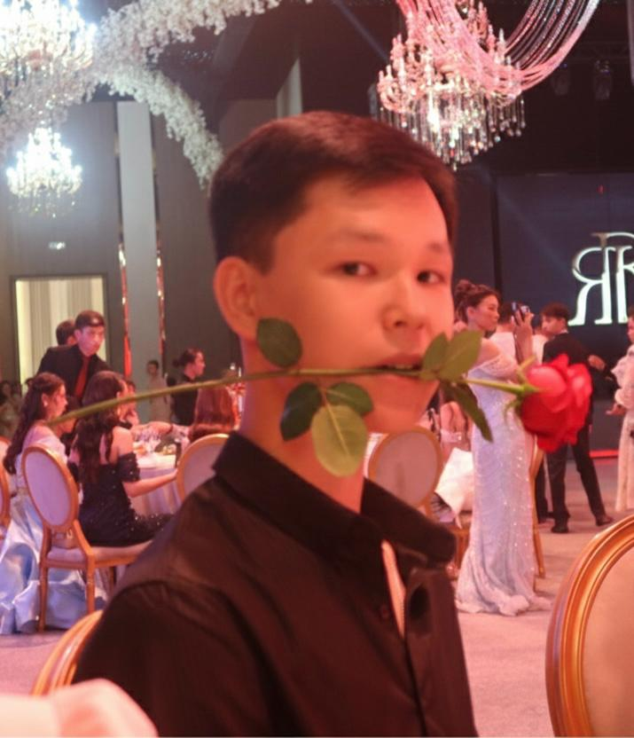

Никаких готовых ответов. Только вопросы, которые заставляют думать. Ешқандай дайын жауап жоқ. Тек ойландыратын сұрақтар.
Сократ узнаёт твои хобби и строит объяснения именно через них. Любишь футбол? Рекурсия объясняется через пасы. Сократ хоббиіңізді біліп, түсіндірмелерді сол арқылы жасайды. Футболды жақсы көресіз бе? Рекурсия пас арқылы түсіндіріледі.
Сократ никогда не произносит «правильно» или «молодец». Один точный вопрос за раз — и ты сам приходишь к открытию. Сократ ешқашан «дұрыс» немесе «жарайсың» демейді. Бір нақты сұрақ — және сіз өзіңіз жаңалыққа жетесіз.
ИИ анализирует эмоции и прогресс на каждом шаге. Тревожишься — темп замедляется. В потоке — задачи усложняются. ЖИ әр қадамда эмоция мен прогрессті талдайды. Алаңдасаңыз — қарқын баяулайды. Ағында болсаңыз — тапсырмалар күрделенеді.
Посмотри, как Сократ ведёт студента к пониманию без единого прямого ответа. Сократтың түсінуге қалай жетелейтінін қараңыз — бірде-бір тура жауапсыз.
Движок анализирует каждое сообщение и подстраивает тон, темп и сложность под твоё эмоциональное состояние. Қозғалтқыш әр хабарламаны талдап, тонды, қарқынды және күрделілікті эмоционалдық жағдайыңызға бейімдейді.
Сократ работает только с теми данными, которые ты разрешил использовать. История диалогов, хобби, эмоциональный профиль — всё хранится в твоём зашифрованном хранилище и не передаётся для обучения глобальных моделей. Сократ тек сіз рұқсат берген деректермен жұмыс жасайды. Диалог тарихы, хобби, эмоционалдық профиль — бәрі шифрланған қоймада сақталады және жаһандық модельдерді оқыту үшін берілмейді.
О методе Сократа, приватности данных и системе эмоций.Сократ әдісі, деректер құпиялылығы және эмоция жүйесі туралы.
Объединили ИИ-разработку, образование и дизайн, чтобы создать наставника нового поколения.Жаңа буын тәлімгерін жасау үшін ЖИ-дамытуды, білімді және дизайнды біріктірдік.
Глава ИИ-разработки ЖИ-дамытудың жетекшісі

Frontend Developer
Backend Developer
Project Manager
UX-Designer